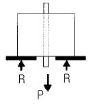
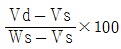
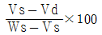
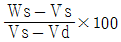
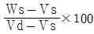
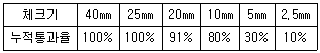
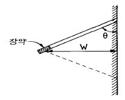
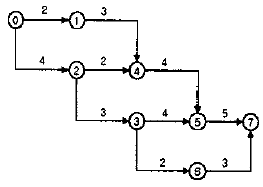
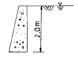

건설재료시험산업기사 (2002-05-26 기출문제)
1과목: 콘크리트공학
1. 콘크리트의 배합설계시 물-시멘트 비를 결정할 때 고려되지 않는 사항은?
- 강도
- 내구성
- 유동성
- 수밀성
(정답률: 알수없음)

2. 포장콘크리트와 같이 평면으로 타설된 콘크리트의 반죽질기를 측정하는데 매우 편리하게 수행할 수 있는 시험방법은?
- 흐름시험
- 케리볼(kelly ball)시험
- 일리발렌(iribarren)시험
- 비비(vee bee)반죽질기시험
(정답률: 50%)
3. 일반적인 철근 콘크리트(RC)와 비교한 프리스트레스트 콘크리트(PSC)의 특징을 틀리게 기술한 것은?
- 내구성 및 수밀성이 양호하다.
- 고강도 강재를 사용하므로 내화성에 있어서 불리하다.
- 전단면을 유효하게 이용할 수 있어 경량의 구조가 가능하다.
- 강성이 크므로 변형이 작고 진동이 거의 없는 구조가 대부분이다.
(정답률: 알수없음)
4. 다음 중 굳지 않은 콘크리트의 성질을 나타내는 용어가 아닌 것은?
- 반죽질기(consistency)
- 워커빌리티(workability)
- 레이턴스(laitance)
- 성형성(plasticity)
(정답률: 82%)
5. 콘크리트의 양생 기간중 양생의 기본요건으로 거리가 먼 것은?
- 물(수분)을 충분히 공급하여야 한다.
- 냉각과 가열을 반복하여 강화시킨다.
- 양생기간중에는 형틀을 존치시킨다.
- 성형된 콘크리트에 진동이나 충격을 피한다.
(정답률: 50%)
6. 한중 콘크리트 시공시 주의해야 할 사항 중 틀린 것은?
- 급격한 온도 변화를 방지한다.
- 조기 강도를 높이도록 한다.
- 거푸집을 오래 거치하고 보온 양생한다.
- 물-시멘트 비를 높인다.
(정답률: 82%)
7. 보통 구조물에 쓰이는 콘크리트의 강도는 일반적으로 재령 몇 일에서의 시험값을 기준으로 하는가?
- 14일
- 21일
- 28일
- 180일
(정답률: 알수없음)
8. 콘크리트내 공기량에 관한 설명 중 맞지 않는 것은?
- 적당량의 연행공기를 갖고 있는 콘크리트는 동결융해에 대한 저항성이 크다.
- AE공기는 워커빌리티를 저하시킨다.
- 공기량이 증가하면 강도는 감소한다.
- 적당한 공기량은 4∼7% 정도이다.
(정답률: 55%)
9. 단위용적중량이 1.68tonf/m3인 굵은골재의 비중이 2.65일 때 이골재의 공극률은 얼마인가?
- 28.6%
- 36.6%
- 37.7%
- 63.4%
(정답률: 67%)
10. 콘크리트를 진동다짐할 때 진동기는 아래 층 콘크리트 속에 얼마 정도 찔러 넣어야 하는가?
- 10cm
- 20cm
- 30cm
- 40cm
(정답률: 74%)
11. 중성화에 대한 설명 중 옳지 않은 것은?
- 시멘트 속의 알칼리 성분이 골재 속의 실리카 성분과 반응하여 발생하는 화학반응이다.
- 물-시멘트비를 작게하고 AE제, 감수제를 사용하면 중성화가 억제된다.
- 중성화시험 방법은 페놀프탈레인 용액을 사용하여 붉은 색으로 변하지 않는 부분은 중성화된 것으로 하여 그 두께를 측정한다.
- 콘크리트가 중성화가 되면 철근이 부식하기 쉽다.
(정답률: 알수없음)
12. 워커빌리티(workability)의 측정법으로 틀린 것은?
- 슬럼프시험
- 흐름시험
- 리몰딩시험
- 르 샤틀리에 시험
(정답률: 55%)
13. 수중콘크리트에 대한 설명중 잘못된 것은?
- 물-시멘트비는 50% 이하를 표준으로 한다.
- 단위시멘트량은 370kgf/m3 이상을 표준으로 한다.
- 완전히 물막이를 할 수 없는 경우에는 유속이 1초당 5cm 이하로 제한하여야 한다.
- 트래미 1개로 칠 수 있는 수중 콘크리트의 면적은 50m2 정도가 좋다.
(정답률: 57%)
14. 가경식 믹서인 경우 믹서 안에 재료를 투입한 후 비비는 시간의 표준은?
- 30초 이상
- 1분 이상
- 1분 30초 이상
- 2분 이상
(정답률: 91%)
15. 경량골재콘크리트 시공시 유의사항으로 틀린 것은?
- 경량골재는 일반적으로 흡수율이 크므로 골재의 함수량은 가능한 일정하도록 관리한다.
- 경량골재콘크리트는 슬럼프가 일반적으로 작게 나오는 경향이 있다.
- 경량골재콘크리트는 재료분리가 일어나기 쉬워 다짐시 진동기를 사용하면 안된다.
- 경량골재콘크리트는 건조균열을 일으키기 쉽고 양생 중 습윤상태를 유지하도록 주의해야 한다.
(정답률: 알수없음)
16. 풍화(aeration)된 시멘트에 대하여 옳게 설명된 것은?
- 비중이 증가한다.
- 응결이 지연된다.
- 강열감량이 감소한다.
- 강도발현이 좋아진다.
(정답률: 54%)
17. 그림은 콘크리트속에 묻힌 철근을 잡아 당겨 빼는 시험(pull-out test)을 나타낸다. 철근의 묻힌 길이가 30 cm, 철근의 지름이 1.27 cm, 최대하중이 2.5 tonf 이었다면 부착강도는 얼마인가?

- 16 kgf/cm2
- 21 kgf/cm2
- 66 kgf/cm2
- 197 kgf/cm2
(정답률: 20%)
18. 조강성, 내화성, 화학적 저항성이 높고 발열량이 커 긴급을 요하는 공사, 내화용 콘크리트, 해양콘크리트 또는 한중공사의 시공에 적절히 이용될 수 있는 시멘트는?
- 팽창 시멘트
- 고로 시멘트
- 실리카 시멘트
- 알루미나 시멘트
(정답률: 60%)
19. 포장 콘크리트에 요구되는 성질이 아닌 것은?
- 휨강도가 크고 그 편차가 적을 것
- 마모에 대한 저항성이 클 것
- 기상작용에 대한 내구성이 풍부할 것
- 건조수축에 의한 균열이 생기기 쉬우므로 체적변화가 클 것
(정답률: 알수없음)
20. 해수를 혼합수로 사용할 때 콘크리트에 미치는 영향으로 틀린 것은?
- 철근과 PC강재를 부식시킨다.
- 응결이 늦어진다.
- 초기강도가 크다.
- 장기강도가 작다.
(정답률: 알수없음)
2과목: 건설재료 및 시험
21. 표면건조 포화상태의 잔골재를 기준으로 한 표면수율 P1을 구하는 식은? (단, Vd = Ws/표건상태의 비중, Ws = 시료의 중량(gf), Vs = 시료에 의해서 배제되는 물의 중량(gf))




(정답률: 알수없음)
22. 골재의 조립률이 6.8 및 5.4인 2종류의 굵은골재를 중량비로 7 : 3 혼합한 골재의 조립률은?
- 5.38
- 5.68
- 6.38
- 6.58
(정답률: 알수없음)
23. 사용량이 비교적 많아 콘크리트의 배합 설계에 고려해야 되는 혼화재료는?
- 슬래그
- 감수제
- 촉진제
- 발포제
(정답률: 67%)
24. 특수시멘트에 대한 설명 중 틀린 것은?
- 알루미나시멘트는 초조강성을 나타내지만 양생온도에 의해 응결 경화가 크게 영향을 받는다.
- 팽창시멘트는 수축보상용시멘트와 화학적 프리스트레스 도입용으로 구분되어 사용된다.
- 초속경시멘트는 응결이 매우 빠르며 수화반응 2∼3시간에 100∼200kgf/cm2정도의 조기강도를 발휘한다.
- 알루미나시멘트 및 초속경시멘트는 온도가 비교적 높은 하절기공사의 긴급보수용으로 적합하다.
(정답률: 55%)
25. 직경 20cm, 길이 3m인 재료에 축방향 인장을 가해서 변형률을 측정한 결과, 길이가 6mm 늘어나고 직경이 0.1mm 줄었다면 이 재료의 poisson(포아송)비는 얼마인가?
- 0.20
- 0.25
- 0.30
- 0.35
(정답률: 60%)
26. 혼화재인 포졸란을 사용하면 콘크리트에 여러가지 영향이 미친다. 다음 중 틀린 것은?
- 작업이 용이하고 발열량이 증대된다.
- 장기에 걸친 강도가 증진된다.
- 콘크리트의 품질개선에 효과가 있다.
- 시멘트 사용량을 감하고 경제적으로도 될 수 있다.
(정답률: 42%)
27. 교통하중 등에 의해서 발생하는 아스팔트의 유동성 변형정도를 알아보기 위한 시험은?
- 아스팔트 신도시험
- 아스팔트 비중시험
- 아스팔트 침입도시험
- 아스팔트 안정도시험
(정답률: 30%)
28. 석재에서 견치석에 대한 설명으로 옳은 것은?
- 앞면이 거의 사각형에 가깝고 길이는 네면을 쪼개어 면에 직각으로 잰 길이가 면의 최소변의 1.5배 이상인 것.
- 앞면이 거의 직사각형에 가깝고 길이는 2변을 쪼개어 면에 직각으로 잰 길이가 면의 최소변의 1.2배 이상인 것.
- 두께가 15cm 이하이고 나비가 두께의 3배 이상인 것.
- 나비가 두께의 3배이하이고 나비보다 길이가 긴 직육면체 모양의 것.
(정답률: 37%)
29. 잔골재,필러에 다량의 아스팔트를 가열 혼합하여 제조한 것으로서 공극율이 대단히 작고 유동성이 풍부한 특징을 가져 주로 수리구조물의 유입공법에 이용되는 것은?
- 스트레이트 아스팔트
- 구스 아스팔트
- 아스팔트 콘크리트
- 매스틱 아스팔트
(정답률: 알수없음)
30. 다음 혼화재료 중에서 콘크리트 워커빌리티의 개선효과가 없는 것은?
- 응결경화 촉진제
- 플라이애시
- 유동화제
- AE감수제
(정답률: 알수없음)
31. 직경 20mm,표점거리 160mm 인 봉강(棒綱)을 인장시험하여 항복점 하중 9,420kgf, 최대하중 12,560kgf을 얻었을 때 인장강도는 얼마인가?
- 30kgf/mm2
- 40kgf/mm2
- 58.9kgf/mm2
- 78.5kgf/mm2
(정답률: 29%)
32. 시멘트 제조공정 중에서 응결지연제인 석고를 첨가하는 시기는?
- 소성(Burning) 과정
- 클링커(Clinker) 분쇄과정
- 포장과정
- 원료혼합과정
(정답률: 알수없음)
33. 목재의 방부 처리법으로 사용되는 방법이 아닌 것은?
- 약제 도포법
- 표면 탄화법
- 약제 침적법
- 고주파법
(정답률: 알수없음)
34. 다음 중에서 아스팔트의 점도(consistency)에 가장큰 영향을 미치는 것은?
- 아스팔트의 비중
- 아스팔트의 온도
- 아스팔트의 인화점
- 아스팔트의 종류
(정답률: 알수없음)
35. 다음중 천연 아스팔트가 아닌 것은?
- 록 아스팔트(rock asphalt)
- 샌드 아스팔트(sand asphalt)
- 아스팔타이트(asphaltite)
- 블라운 아스팔트(blown asphalt)
(정답률: 42%)
36. 토목분야의 건설공사 품질시험기준 중 도로공사 노상의 함수량시험은 포설 후 다짐전 몇 m3 마다 실시 하여야 하는가?
- 4000 m3
- 3000 m3
- 2000 m3
- 1000 m3
(정답률: 알수없음)
37. 다음중에서 폭발력이 가장강하고 수중에서도 폭발할 수 있는 다이너마이트는 어느 것인가?
- 교질 다이너 마이트
- 규조토 다이너 마이트
- 분상 다이너 마이트
- 스트레이트 다이너 마이트
(정답률: 90%)
38. 포틀랜드 시멘트의 성질에 대한 설명 중 틀린 것은?
- 시멘트의 분말도가 높으면 수축이 크고 균열발생의 가능성이 크며, 시멘트 자체가 풍화되기 쉽다.
- 시멘트가 불안정하면 이상팽창 및 수축을 일으켜 콘크리트에 균열을 발생시킨다.
- 시멘트의 입자가 작고 온도가 높을수록 수화속도가 빠르게 되어 초기강도가 증가된다.
- 시멘트의 응결시간은 수량이 많고 온도가 낮으면 빨라지고 분말도가 높거나 C3A의 양이 많으면 느리게 된다.
(정답률: 39%)
39. 건설공사 품질시험 기준에서 되메우기 및 구조물의 뒷채움의 현장밀도 시험은 독립구조물인 경우 몇층마다 실시 하여야 하는가?
- 1층
- 2층
- 3층
- 4층
(정답률: 59%)
40. 보기와 같은 골재 체가름 성과표에 의하면 굵은 골재 최대치수는?

- 40㎜
- 25㎜
- 20㎜
- 10㎜
(정답률: 알수없음)
3과목: 건설시공학
41. 공정표에서 Critical Path의 설명 중 틀린 것은?
- Critical Path 경로상의 각 소요일수의 합은 각 경로 중 작업일수가 가장 작은 값이 된다.
- Critical Path 경로중 한 작업구간이 늦어지면 그만큼 공사기간이 지연된다.
- Critical Path 상의 작업을 중심으로 해서 공사관리를 진행하면 가장 효과적이다.
- Critical Path는 2개 이상 생길수도 있다.
(정답률: 30%)
42. 홍수시 물이 월류할 때 가장 불안전한 댐은?
- 어스댐
- 중력댐
- 아치댐
- 부벽식댐
(정답률: 알수없음)
43. 지하철과 같이 지반보다 낮은 곳의 흙을 굴착하여 적재하기 위한 적당한 장비가 아닌 것은?
- 이넌데이터
- 백호
- 드래그라인
- 클램셀
(정답률: 29%)
44. 간선 집수거의 연장을 적게 또는 배수구의 수가 1개 정도로서 습지대에 설치하는 암거 배열 방식은?
- 집단식 배열 방식
- 차단식 배열 방식
- 어골식 배열 방식
- 빗식 배열 방식
(정답률: 50%)
45. 그림과 같은 1개의 자유면을 가진 천공배치에 대하여 효과가 가장 큰 천공 각도는? (단, W는 최소저항선 )

- θ = 30°
- θ = 45°
- θ = 60°
- θ = 75°
(정답률: 46%)
46. 포장의 유지보수 공법에서 아스팔트 포장의 부분적 균열, 포트홀(pothole)등의 파손부를 포장재료로 채우는 응급적인 처리방법을 무엇이라 하는가?
- 표면처리
- 팻칭(Patching)
- 덧씌우기(Overlay)
- 절삭재포장
(정답률: 85%)
47. 유압 재크를 이용해 거푸집을 이동 시키면서 진행 방향으로 슬랩(slab)을 타설하는 교량 가설 공법으로 메인거더(maingirder)의 상하 좌우 조절이 가능한 공법은?
- Dywidag 공법
- 압출 공법
- MSS공법
- 프리 캐스트 공법
(정답률: 19%)
48. 댐축조 공사에서 계획저수량 이상의 유입되는 홍수량을 안전하게 방류할 수 있도록 설치하는 것을 무엇이라 하는가?
- 검사랑
- 여수로
- 취수로
- 조절부
(정답률: 알수없음)
49. Heaving 방지 대책에 관한 방법으로 틀린 것은?
- 표토를 제거하여 하중을 적게 한다.
- 굴착면에 하중을 감한다.
- 흙 물막이벽의 근입 깊이를 충분히 취한다.
- 지반을 개량한다.
(정답률: 22%)
50. 터널의 지질이 연암이고 다소 불량할 때 터널 단면형은 어떤 모양이 가장 적당한가?
- 원형단면(圓形斷面)
- 구형단면(矩形斷面)
- 마제형단면(馬蹄形斷面)
- 직벽식 반원형 단면(直碧式 半圓形)
(정답률: 25%)
51. 준설선으로서는 최대의 힘을 가지고 있고 단단한 지반이나 부서진 암석의 굴착에 가장 적당한 준설선은 어느 것인가?
- 버킷준설선
- 펌프준설선
- 딥퍼준설선
- 그래브준설선
(정답률: 31%)
52. 다져진토량 37,800m3을 성토하는데 흐트러진토량 27,500m3이 있다. 이때 부족 토량은 자연상태의 토량으로 얼마인가? (단, 사질토이고 토량의 변화율 L=1.25, C=0.9임)
- 16,000m3
- 18,000m3
- 20,000m3
- 22,000m3
(정답률: 10%)
53. 다음과 같은 공정표에서 주공정이 옳게 표기된 것은?

- 0-1-4-5-7, 14일
- 0-2-4-5-7, 15일
- 0-2-3-5-7, 16일
- 0-2-3-6-7, 12일
(정답률: 50%)
54. 토공기계의 선정에 대한 다음 설명 중 옳지 않은 것은?
- 습지 불도저는 cone 지수가 낮은 곳에도 작업이 가능하다.
- 모터스크레이퍼는 trafficability가 나쁜 현장에 적합하다.
- 불도저는 단거리용의 굴착 운반 기계이고 보통 70m 이내의 운반거리에 적용된다.
- 굴착 개소가 지반보다 높을 경우에는 power shovel이 적합하다.
(정답률: 알수없음)
55. 콘크리트의 포장의 설계 기준 강도로 사용하는 것은?
- 압축강도
- 인장강도
- 휨강도
- 전단강도
(정답률: 알수없음)
56. 수평층 쌓기에 대한 설명 중 옳지 않은 것은?
- 수평층 쌓기에는 후층쌓기와 박층쌓기가 있다.
- 이 공법은 공사 중 압축이 적어 완성후에도 침하가 크다.
- 저수지의 흙댐, 옹벽, 교대 등의 뒷채움 흙에 많이 사용하는 공법이다.
- 공사 기간이 길어지고 공사비가 많이 드는 결점이 있다.
(정답률: 28%)
57. Franky 말뚝의 시공방법 설명중 옳지 않은 것은?
- 시공 중 해머는 케이싱 내부 콘크리트를 타격 하므로 소음과 진동이 적어 도심지 시공에 적합하다.
- 묽게 비빈 콘크리트의 반죽을 내관속에 채워 넣은 후 위를 drop hammer로 때린다.
- 강관을 약간 끌어 올려서 지상에 고정시킨 다음 콘크리트에 타격을 가하면 구근이 형성된다.
- 해머의 타격력은 콘크리트와 강관의 마찰저항에 의해 강관이 콘크리트와 같이 땅속에 관입한다.
(정답률: 17%)
58. 지름 40cm의 나무말뚝 36본을 박아서 기초저판을 지지하고 있다. 말뚝의 배치를 6열로 하고 각 열을 등간격으로 6본씩 박았을 때 군항의 효율은? (단, 말뚝의 중심간격은 1.0m이며, Converse-Labarre식을 사용할 것)
- 0.596
- 0.696
- 0.796
- 0.896
(정답률: 0%)
59. 옹벽 자체의 자중으로 토압에 저항하도록 3∼4m 높이로 만들어진 옹벽은?
- 중력식옹벽
- 반중력식옹벽
- 부벽식옹벽
- 역T형옹벽
(정답률: 알수없음)
60. 터널 굴착의 신공법인 TBM (Tunnel Boring Machine)에 의한 장점 중 틀린 것은?
- 노무비가 절약된다.
- 안정성이 크다.
- 버럭 반출이 용이하다.
- 굴착시 연속적으로 시행되므로 공사기간이 길어진다.
(정답률: 50%)
4과목: 토질 및 기초
61. 어떤 유선망도에서 상하류면의 수두차가 4m, 등수두면의 수가 13개, 유로의 수가 7개일 때 단위폭 1m당 1일 침투유량은 얼마인가? (단, 투수층의 투수계수 K = 2.0×10-4㎝/sec)
- 8.0 × 10-1m3/day
- 9.62 × 10-1m3/day
- 3.72 × 10-1m3/day
- 4.8 × 10-1m3/day
(정답률: 알수없음)
62. 말뚝의 지지력을 결정하기 위한 Engineering News 공식을 사용할 때 안전율은 얼마인가?
- 3
- 6
- 8
- 10
(정답률: 알수없음)
63. Terzaghi의 지지력 공식에서 고려되지 않는 것은?
- 흙의 내부 마찰각
- 기초의 근입깊이
- 압밀량
- 기초의 폭
(정답률: 알수없음)
64. 점토지반을 프리-로딩 (Pre-Loading) 공법등으로 미리 압밀시킨 후에 급격히 재하할 때의 안정을 검토하는 경우에 적당한 전단시험은?
- 비압밀 비배수 전단시험
- 압밀비배수 전단시험
- 압밀배수 전단시험
- 압밀완속 전단시험
(정답률: 알수없음)
65. 다짐에 관한 다음의 설명 중 타당하지 않은 것은?
- 사질성분이 많이 내포된 흙은 다짐곡선의 기울기가 급하다.
- 최적 함수비는 흙의 종류와 다짐방법에 따라 다르다.
- 입도분포가 양호한 흙의 건조밀도는 낮다.
- 다짐을 하면 부착성이 양호해지고 투수성과 압축성이 작아진다.
(정답률: 25%)
66. 사면 안정해석법에 관한 설명중 틀린 것은?
- 해석법은 크게 마찰원법과 분할법으로 나눌수 있다.
- Fellenius방법은 주로 단기안정해석에 이용된다.
- Bishop 방법은 주로 장기안정해석에 이용된다.
- Bishop 방법은 절편의 양측에 작용하는 수평방향의 합력이 0이라고 가정하여 해석한다.
(정답률: 30%)
67. 샘플러 튜브(Sampler tube)의 면적비(Ca)를 9%라 하고 외경(Dw)을 6㎝라 하면 끝의 내경(De)은 얼마인가?
- 3.6㎝
- 4.8㎝
- 5.7㎝
- 6.2㎝
(정답률: 10%)
68. 그림과 같은 조건의 옹벽에서 벽면 마찰을 무시할 때 주동 토압계수가 0.4이다. 이때 옹벽에 작용하는 전 주동토압의 합력은? (단, 흙의 포화단위 중량은 1.8t/m3 이다.)

- 2.64 t/m
- 1.44 t/m
- 0.64 t/m
- 3.44 t/m
(정답률: 15%)
69. 어떤 시료에 대한 일축압축 시험의 결과 파괴 압축강도가 3㎏/㎝2일 때 수평면과 45° 를 이루는 파괴면이 생겼다면 내부 마찰각 ø 와 점착력 C는?
- ø = 0, C = 1.5㎏/㎝2
- ø = 0, C = 3㎏/㎝2
- ø = 90°, C = 1.5㎏/㎝2
- ø = 45°, C = 0
(정답률: 알수없음)
70. 어떤 흙의 액성한계는 40%,소성한계는 20%일때 이흙의 소성지수는?
- 20%
- 60%
- 40%
- 30%
(정답률: 알수없음)
71. 다음 중 흙속에서의 물의 흐름이 연직유효응력의 증가를 가져오는 것은?
- 정수압상태
- 하향흐름
- 상향흐름
- 수평흐름
(정답률: 알수없음)
72. 직경 5cm, 높이 10cm인 연약점토 공시체를 일축압축시험한 결과 파괴시 압축력이 2.2kg, 축방향변위가 9mm였다면 일축압축강도(qu)는?
- qu = 0.3 kg/cm2
- qu = 0.2 kg/cm2
- qu = 0.25 kg/cm2
- qu = 0.1 kg/cm2
(정답률: 0%)
73. 다음 중 정적인 사운딩(Sounding)이 아닌 것은?
- 표준관입 시험
- 이스키메타
- 베인 시험기
- 화란식 원추관입 시험기
(정답률: 알수없음)
74. C.B.R시험에서 지름 5cm의 피스톤이 2.5mm관입될 때 표준하중 강도는?
- 1⑤kg/cm2
- 70kg/cm2
- 125kg/cm2
- 207kg/cm2
(정답률: 8%)
75. 항타공식을 적용하여 지지력을 산출할 때 실제와 가장 잘 부합되는 흙은?
- 조밀한 모래지반
- 연약한 점토지반
- 예민한 점토지반
- 느슨한 모래지반
(정답률: 25%)
76. 제체의 침윤선에 대한 설명 중 옳은 것은?
- 흙댐이나 제체내의 자유수면을 침윤선이라 한다.
- 물 분자의 이동하는 괴적을 침윤선이라 한다.
- 흙속의 모든 유선을 침윤선이라 한다.
- 침윤선을 이용하여 침투 유량을 계산할 수 없다.
(정답률: 10%)
77. 지표면위에 16t의 집중하중이 작용하는 경우 깊이 4m에서 작용점 직하의 연직응력의 증가분을 Boussinesq의 식으로 구한 값은?
- 0.5765 t/m2
- 0.8765 t/m2
- 0.6765 t/m2
- 0.4775 t/m2
(정답률: 알수없음)
78. 통일 분류법에서 실트질 자갈을 표시하는 약호는?
- GW
- GP
- GM
- GC
(정답률: 알수없음)
79. 선행 압밀하중(Po)에 대한 설명 중 옳지 않은 것은?
- 흙이 현재 지반에서 과거에 최대로 받았을 때의 압밀하중을 말한다.
- e - log P 곡선상에서 구한다.
- 정규압밀 점토와 과압밀 점토를 구분할 수 있다.
- 압밀 소요시간 계산에 이용된다.
(정답률: 알수없음)
80. Sand drain 공법의 주된 목적은?
- 압밀침하를 촉진시키는 것이다.
- 투수계수를 감소시키는 것이다.
- 간극수압을 증가시키는 것이다.
- 기초의 지지력을 증가시키는 것이다.
(정답률: 46%)